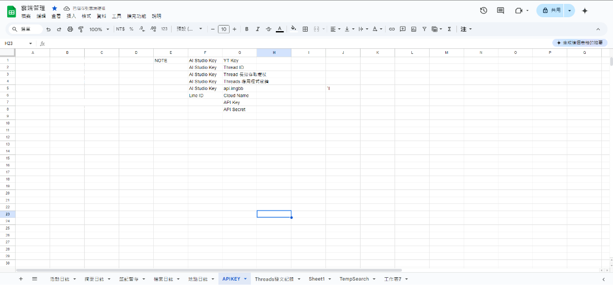
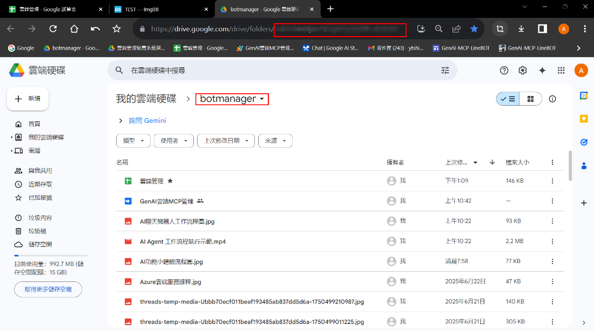
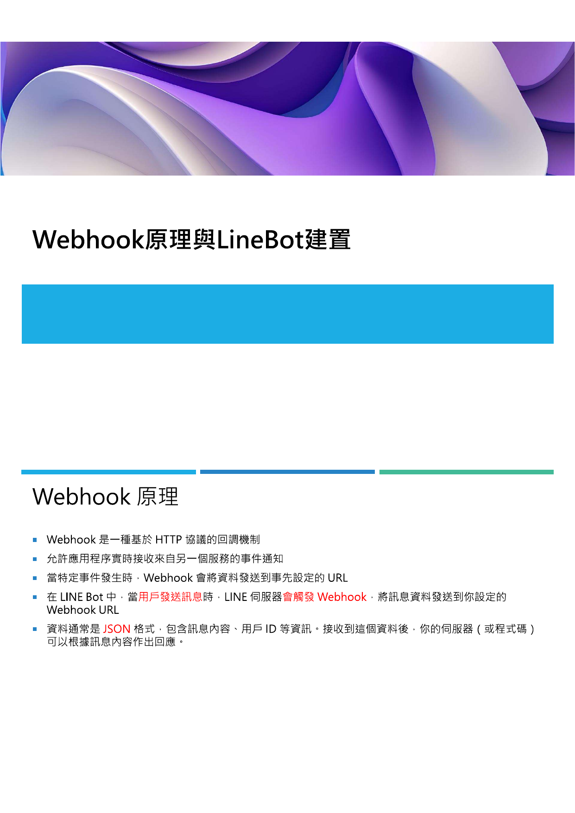

Build a replying bot with Sheets logging
Follow the Node / Cloud Run signature-verifying entry point, GAS signed-record endpoint, and Sheets workflow. The Python MOOC is optional extension material, not a prerequisite or replacement for this hands-on path.
Security: the APIKEY worksheet is a historical example only. Never store secrets in Sheets. Store tokens, Channel Secret, and other API keys in server environment variables or a secret manager. GAS Script Properties holds relay shared-secret and SHEET_ID configuration; it is not a vault. Project editors can retrieve these values, so do not broadly grant editor access.
The documented event fields of public GAS doPost(e) do not expose x-line-signature; pure GAS is not a reliable direct LINE signature-verification entry point. Use Node / Cloud Run to verify the original request body before replying and sending signed records. GAS verifies the relay signature before writing to Sheets; relay verification is not LINE signature verification.
Prerequisites
- A LINE account that can access LINE Developers.
- A Google account with access to Sheets, Drive, and Apps Script.
- No Gemini API key is required for basic replies and Sheets logging. Optional AI or posting workflows need their own keys, stored in server environment variables or a secret manager.
- A clean naming plan for folders and worksheets so maintenance stays manageable.
Step 1: Build Google Sheet as the memory layer

Historical example only: the APIKEY worksheet shown above is not recommended for storing keys. Never store secrets in Sheets; use server environment variables or a secret manager.
The teaching materials treat Google Sheet as a durable memory layer. Prepare tabs for logs, notes, uploaded files, and temporary workflow data as needed. The APIKEY tab is a historical example only, not a secret store.
Step 2: Create the Google Drive storage folder

Google Drive stores uploaded images, videos, and documents from LINE, as well as generated Docs, Slides, and report files. Keep the folder ID ready for configuration.
Step 3: Create the LINE Channel
Create a LINE Official Account and enable Messaging API in LINE Official Account Manager, then open the corresponding channel in LINE Developers Console. Store the Channel secret and Channel access token in server environment variables or a secret manager, never in Sheets. Follow the complete quickstart for configuration and verification.
Step 4: Deploy Apps Script as a web app

Deploy Apps Script as the signed-record endpoint, configuring the relay shared secret and SHEET_ID in Script Properties. Node / Cloud Run handles LINE signature verification and replies. Script Properties is not a vault: project editors can retrieve its values, so restrict editor access.
Step 5: Set and verify the Webhook
Set the Node / Cloud Run signature-verifying endpoint as the LINE Webhook URL, not the GAS URL. Test valid signatures, rejection of invalid signatures, bot replies, and Sheets records; Console Verify alone does not prove signature validation. Disable built-in auto replies so your bot keeps control.
Minimum success criteria
- Webhook verification succeeds.
- An event reaches Apps Script when a message is sent.
- A log or test record appears in the spreadsheet.